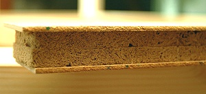
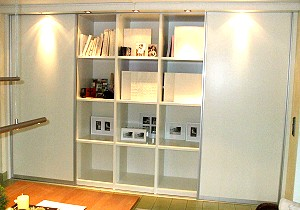
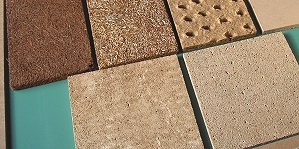

Website durchsuchen:
Riefa - Leichtbauplatte
Ein innovatives Produkt für den Möbel- und Innenausbau
Gerade in der heutigen Zeit, wo wir mehr denn je Verantwortung für unsere Umwelt tragen, sind ökologische und nachhaltige Werkstoffe wertvoller denn je.
Die Firma Formatec GmbH entwickelte in jahrelangen Forschungen einen ökologischen Plattenwerkstoff, der von unabhängigen Instituten geprüft und zertifiziert wurde, als Rietberger Faserplatte, kurz genannt RIEFA, für Produktinnovationen im weitesten Sinne.
 Rietberger Faserplatte
Unsere Tischlerei beschäftigt sich ausschließlich mit dem individuellen Möbelbau. Wir haben die RIEFA-dB-Platte eingehend getestet und verarbeitet.
Wir sind Partner der Firma Formatec GmbH und vertreiben das Produkt für den Innenausbau und Möbelbereich.
Auch die Fachpresse hat Interesse an dem neuen Produkt gezeigt.
Veröffentlichungen
Januar 2008: Die Glocke und die Neue Westfälische
Oktober 2008: Das Deutsche Handwerksblatt auf der Technikseite
Juli 2009: Perspektiven
August 2009: Deutsches Handwerksblatt
September 2009: Neue Westfälische - NW Handwerk
Januar 2011: Genau-Fachzeitung für Tischler und Schreiner
September 2011: Perspektiven
April 2012: 2-seitiger Bericht in der Bau- und Möbeltischler (BM)
Wie kann ich diese Platte einsetzen?
Zum Beispiel:
- als Innenausbauplatte ab ca. 16 mm Stärke
- als Trennwandplatte im Trockenbaubereich
- als Superleichte Dämmung in Schiebetürsystemen und Raumteilern
- als exzellente Schallabsorber in großen Räumen
- als Ausbaumaterial von Wohnmobilen wegen des geringen Eigengewichts
- als Schalldämmung im Deckenbereich für Klassenzimmer, Seminarräume
- als Dämmung von Türen und Schränken für Besprechungsräume, Behandlungszimmer...
 Anwendung im Möbelbau
Wo liegen die Vorteile dieses Materials?
- Wärme- und Schallschutz gleichermaßen: Wärmeleitfähigkeit 0,068 nach EN 12667, Schalladsorbtion 0,95 – 0,97, Schalldämmung nach ISO 140-3 je nach Bauteil bis zu 50 dB Rw
- Auf Wunsch auch brandschutzgeeignet (F 30 geprüft nach DIN 4102 und zertifiziert)
- Geringes spezifisches Gewicht (ca. 220 kg/cbm)
- Verformbar oder starr
Warum entscheide ich mich gerade für dieses Leichtbau-Produkt?
- 100% recycelbar
- 100 % Natur aus unbehandelte natürliche Fasern mineralische Bestandteilen und Getreideprodukten
- 100% chemikalienfrei
- Sehr niedriges Eigengewicht
- Für den Anwender völlig unbedenklich zu verarbeiten
- Neue Absatzmärkte durch neue technische Eigenschaften
- Nutzung patentierter Alleinstellungsmerkmale
- Kreative individuelle Produktentwürfe für den Endverbraucher möglich
Was für Oberflächen kann ich wählen?
Echtholz furniert. Furnier nach Wahl. Mit MDF oder HDF Decks. HPL beschichtet.
 Verschiedene Oberflächen
Wie komme ich an meinen Preis?
Durch detaillierte Angaben wie
- Einsatzgebiet
- Gewünschte Eigenschaften wie Schallschutz, Brandschutz, Wärmedämmung
- Oberflächenwunsch
- Plattenstärke
- Plattengröße
Die Produktbeschreibung bezieht sich ausschließlich auf die Kernplatte, nicht auf die von Ihnen gewählten Oberflächendecks. Wir erstellen Ihnen nach Ihren Angaben dann umgehend ein speziell auf Ihre Bedürfnisse abgestimmtes Angebot. Sollten Sie noch weitere Fragen haben, rufen Sie uns an, wir stehen Ihnen gerne mit weiteren Informationen zur Seite.
Haben wir Ihr Interesse geweckt? Dann würden wir uns freuen, von Ihnen zu hören.
Die Informationen als pdf-Datei (und zum Download) gibt es hier.
Tischlerei Hans-Martin Leskovsek
Lümernweg 142
33378 Rheda-Wiedenbrück
Tel. 05242/34516
Fax 05242/9860515
E-Mail: info@leskovsek.de